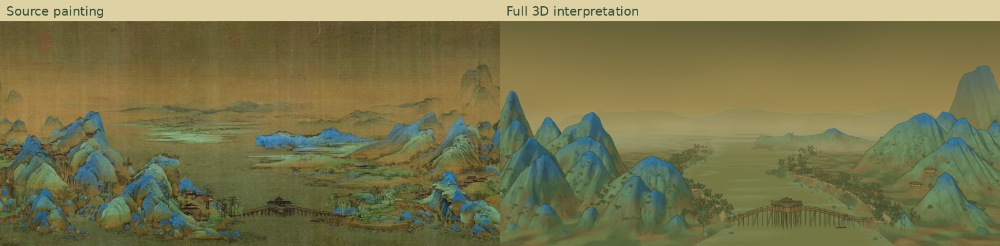
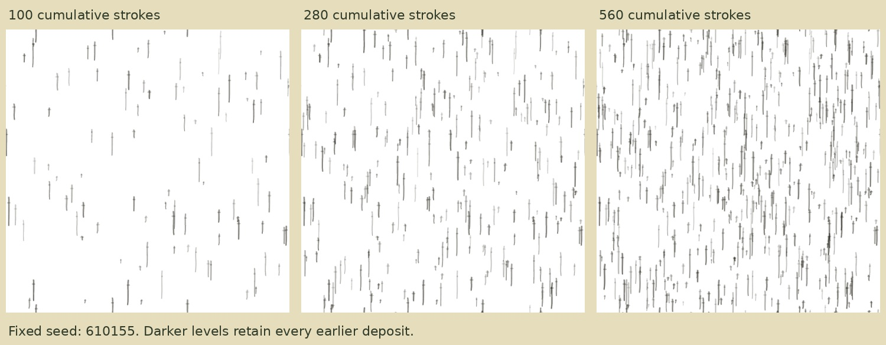
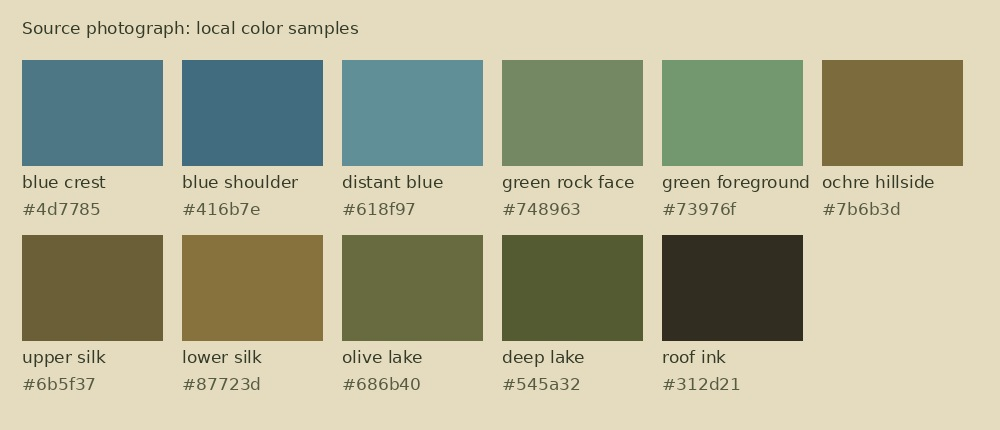
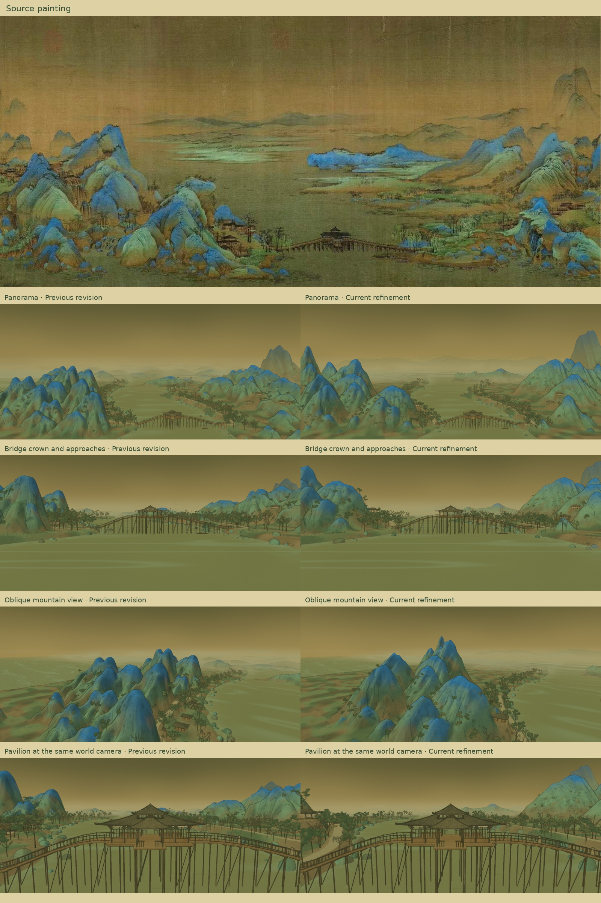

Enter the landscape · Visual studyRendering color as ink
Current focus: mountain geometry in neutral clay. Revision 6 holds these color settings while refining the shapes. The wash examples below use the current geometry.
The revision 5 color experiment explores colored washes that belong to the 3D surfaces. The source’s blue crests, green faces, warm earth and olive silk guide the palette; broken ink follows the rock folds. The camera can approach the same marks and travel past them.

The supplied painting and this reconstruction. The source still has more varied local forms and finer calligraphic marks; the result remains an interpretation.
What the research suggests
Attach paint to surfaces. Meier’s Painterly Rendering for Animation (1996) uses 3D particles as anchors for brush strokes. Here, fixed deposits use the undeformed surface position; wind bends the trees afterward. This preserves the identity of a mark as the camera or branch moves.
Coordinate tone with zoom. Praun, Hoppe, Webb and Finkelstein’s Real-Time Hatching (2001) organizes strokes across tone and resolution. This experiment adapts the idea with three cumulative brush maps: 100, 280 and 560 strokes. Darker levels add marks without moving the earlier ones. Texture mipmaps reduce distant detail smoothly. It does not reproduce the paper’s lapped parameterization.
Separate washes from edges. Bousseau et al.’s coherent watercolor work (2006) combines abstracted color regions with pigment variation and edge effects. Here, soft painted shadow bands, layered colors, dry gaps and small depth-gated edge deposits replace some of the smooth lighting. This is an appearance model, not fluid or paper-absorption simulation.
Give mountains their own stroke logic. Yan et al.’s 3D mountain ink rendering paper (2022) treats feature lines, wrinkle texture and interior coloring separately. Here, silhouette and cleft ink remain separate from surface-following cun ribbons and mineral washes. The published curvature extraction, texture quilting and dynamic-canvas algorithm are not implemented.
The wash experiment
Switch between the same camera with the new wash layer disabled or enabled. Both share the revised geometry, palette and existing ink lines. This isolates the added painted shadows and pigment treatment; it is not a comparison with the previous revision.
 Mountain detail · new ink wash enabled
Mountain detail · new ink wash enabled

The actual generated brush maps. Darker maps contain the earlier deposits. The visible detail uses world coordinates and mipmaps; the subtle final silk texture belongs to the display surface.
Closer to the source
The right-hand range has been opened into lower overlapping shoulders, leaving more lake and green banks between it and the bridge. Several near-left hills have receded to expose their feet. Blue highlights are less electric, earth is warmer olive ochre, foliage is darker, and green washes break across lower shelves. Small trees and grass now grow on selected mountain ledges, rather than only on the shores.

Median colors from small patches of the supplied photograph. They guide relative hue and contrast; they are not measurements of the original pigments or lighting.

Fresh revision 5 and revision 6 renders use identical camera poses and environmental time.
Movement and practical limits
Surface coordinates and seeds stay fixed through the flight. World-space mist drifts behind the foreground; wind bends rooted vegetation, and water strokes move independently. Screen-space contours naturally change with visibility. Triplanar blending and mipmaps can still soften tiny marks, and unusual close angles can reveal parameterization artifacts.
The full layered finish runs in the browser. The six downloadable 3D models preserve editable static geometry and base colors; generic model viewers will not reproduce these custom shaders or motion. More source-specific rock profiles and authored directional brush fields would be the next improvements.
Records: research and adaptations · palette patches · wash checks · scene and motion checks. Mechanical checks verify replay and placement, not artistic equivalence.